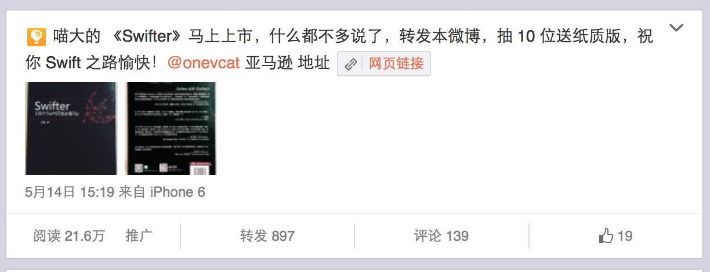

当产品特质可以形成自我营销的时候，寻找一个效果放大的渠道可以迅速积累用户。
这些渠道各种产品都在用，但产品本身会决定是不是真的有用。从这里来看，如果产品本身不够好，营销就会变成过度营销，最后早死了事。
AppSolution 和 少数派 都成为了最早推荐 小记 的公众号，这为 小记 带来持续五天的大量下载。
App 推荐帐号往往有大量的粉丝以及稳定的流量，因这些帐号运营者的气质不同，也有着特定气质的受众群体。
App 推荐还存在两个特殊的群体
段子手通常有着海量的粉丝，不过这些粉丝并不吃硬广告这一套，当然也有段子手能做到让粉丝喜欢的硬广告，比如——天才小熊猫。这类人群能给你带来瞬间的高曝光，大流量，不过价格不菲。
自媒体人是微信时代开始火热的群体，通常都深耕在自己擅长的领域，有着比较稳定的粉丝群，如果你的 App 有很明确的使用领域，那么去找那个领域的自媒体人推荐再适合不过了。
ProductHunt 之后，这类社区在国内开始兴起，ifanr 的 MindStore 和 36Kr 的 NEXT 都是非常好的产品发现社区。
这里往往聚集着同行业的人群。这里的用户也往往是周围朋友中的意见领袖，好玩的产品总是他们第一个发现，所以不要放过这群人。
广告是一种成本非常高的推广方式，它更适合于电商类的产品，每个用户都可以转化成一定比例的消费者。社交产品和工具类在没有大量资金的前提下，投放这些广告需要非常谨慎。
目前转化比较好的有以下几种：
首先——如果可以提供同类产品中最好的体验，那么你完全不需要在早期尝试投放广告这种办法。
近移动端的广告对于 App 来说尤为友好，在以上几种方式里，性价比最高的就是微博转发抽奖，这也不外乎为什么每天微博上都有转发抽奖。

转发抽奖的奖品内容，抽奖方式，都会影响微博账号的形象。
你可以想象一个如果这个奖品的内容如果变成了充电宝，那么随之不管是 《Swifter》这本书还是微博运营者，在 21.6 万的流量里，别说对这两者产生喜爱之情了，可能讨厌的感觉都不会有，绝大部分阅读者甚至会自动屏蔽对此类信息的思考。
转发抽奖的目的很简单，就是扩大流量增加曝光的机会，转化流量，我们通常要注意以下几个地方。
时间 8 - 10 点
转化入口（链接、地址、二维码）
启动 （在发布的时候可以购买粉丝头条，如果有粉丝大号参与了转发，甚至可以帮其购买粉丝头条）
小记 是一款可以自我营销的产品，工具类的产品往往都有这种特性，当用户在社交网络分享工具制作的图文的时候，就会带来大量的下载。
当然，前提是——
很不幸的是，当你面临一款不具备任何这些传播特性的产品的时候，营销会变的异常艰苦。
除了产品的特质，你也可以用一些方法帮助扩大这种效应
工具类 App 的一大特色就是对特殊的、随机性的事件的融合，从而形成强大的传播效应。
这些效应形成后，如何转化成你自己的下载又是很重要的一部分。
例如 上电视，当时网友制作了一个 Minecraft 相关的段子
小记 和 上电视 都是不在用户生成的内容上打 Logo 的工具，所以用户分享出去后，对于热门内容的转化尤其重要。
这个图片被微博大号“抄”去后，我们去评论了一则 “这是用一个叫 上电视 的 App 制作的，赞我让大家知道”。最终转化了 3000＋ 下载，可谓经济高效。
营销并不是产品最终的解药，当产品本身不够成对需求的满足的时候，过度营销会使得用户的期待落空，你将面对人去楼空的困窘。
Google Glass 就是过度营销的典型例子，尽管这个设备一度让大家趋之若鹜，甚至可以说开启了智能设备的元年。当花费高昂费用的用户把这个产品买入手中的之后，却失望的发现与宣传的效果相去甚远。
而后微软推出的 HoloLens 更是让 Google Glass 看起来像一款玩具。
与过度营销相比，反其道而行之也未尝不可。
Apple Watch 在推出前曾经传出电池续航只有两个小时，但发布后实际的续航却可以达到两天。在聚光灯下以拉低预期的营销方式来制造惊喜，也未尝不是一招妙棋。